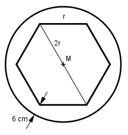

Aufgabe 205 Eine regelmäßige Sechsecksäule mit einer Seiten- länge von 32 cm steht auf einem zylindrischen Sockel. Wie groß ist dessen Durchmesser d, wenn er beidseits 6 cm über die längere Sechseck- diagonale hinausragt?

d = 2 * r + 2 * 6 cm d = 2 * 32 cm + 12 cm = 76 cm